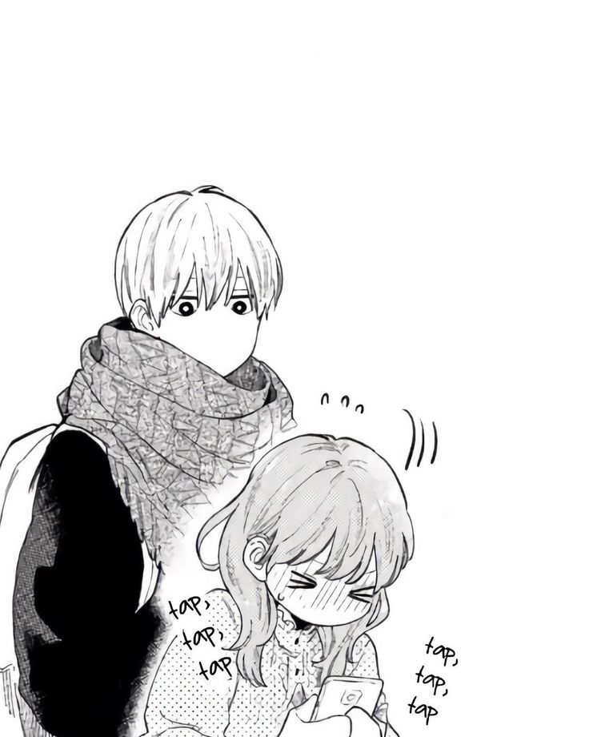

Welcome to the "Manga I Read" Website!
Discover and explore exciting manga series that have captivated readers worldwide.

Featured Manga Series
A Sign of Affection
"A Sign of Affection" is a heartwarming manga that follows the story of Yuki, a college student who is hearing impaired, and Itsuomi, a fellow student who takes an interest in her. Together, they navigate the challenges of communication and develop a deep bond.
Spy x Family
"Spy x Family" is an action-packed manga with a twist. It revolves around a spy named Twilight, who is tasked with a mission to infiltrate an elite school. To maintain his cover, he adopts a young girl named Anya and pretends to be a father. Little does he know that Anya is a telepath, and their lives become intertwined with a skilled assassin and a secret agent.

Yamada-kun to Lv999 no Koi wo Suru
"Yamada-kun to Lv999 no Koi wo Suru" is a romantic comedy manga set in a virtual reality MMORPG world. The story revolves around Yamada, an average gamer who accidentally confesses his love to a top-level player named Sera. Despite their vast level difference, they embark on a journey together, forming a unique and heartwarming bond.